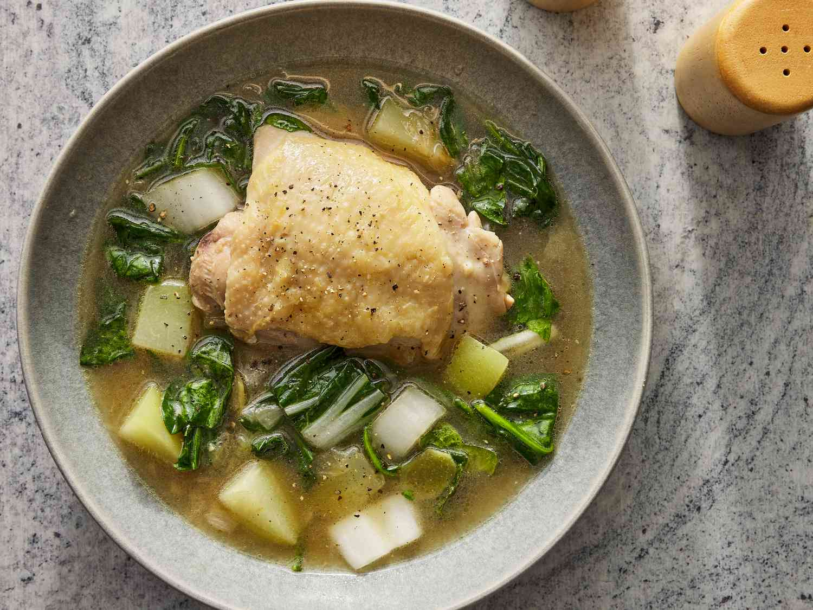

Chicken

Description
Chicken Tinola is a Filipino soup dish. It involves cooking chicken pieces in ginger broth.
It is a popular cold weather dish. I always feel warm and cozy every time I eat it.
This Filipino Chicken Soup is best enjoyed with fish sauce as dipping sauce, and a cup of warm white rice.
Tinola is traditionally cooked with wedges of unripe papaya and malunggay leaves.
These components make it a good source of nutrients. The secret in making a good tinola is to simmer the chicken for longer periods of time.
his extracts the flavor from the chicken. It also makes the chicken tender in the process.
Ingredients
- 2 tbsps. cooking oil
- 4 cloves garlic, crushed
- 1 tsp. ginger, cut in strips
- 1/2 c. onion, chopped
- 1 stewing chicken weighing 1 kilo, cut into serving pieces
- 1 tbsp. patis
- 10 cups rice water
- 1 small green papaya, sliced into serving pcs.
- 1 cup sili leaves (pepper leaves)
- 1 tsp. salt
Steps
- Fry the garlic in hot cooking oil until brown
- Add the ginger and chopped onions
- Cook until soft
- Drop in pieces of chicken
- Season with patis
- Cover and let simmer for 5 minutes
- Add the rice water, simmer until chicken is tender
- Add the sliced papaya and cook until papaya is tender
- Just before remmoving the fire, season with salt and vetsin
- Add the sili leaves
Return to Home Page